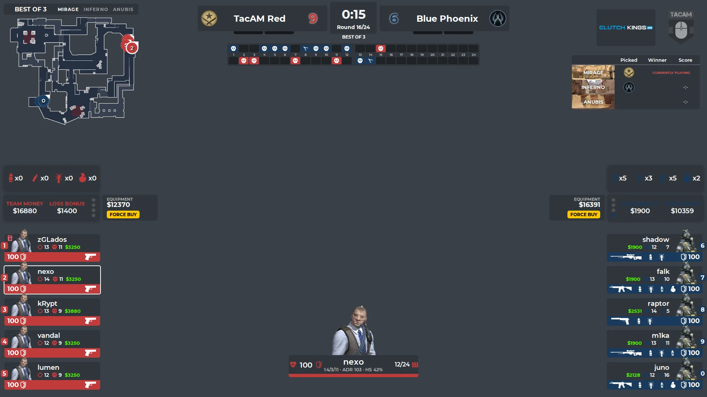
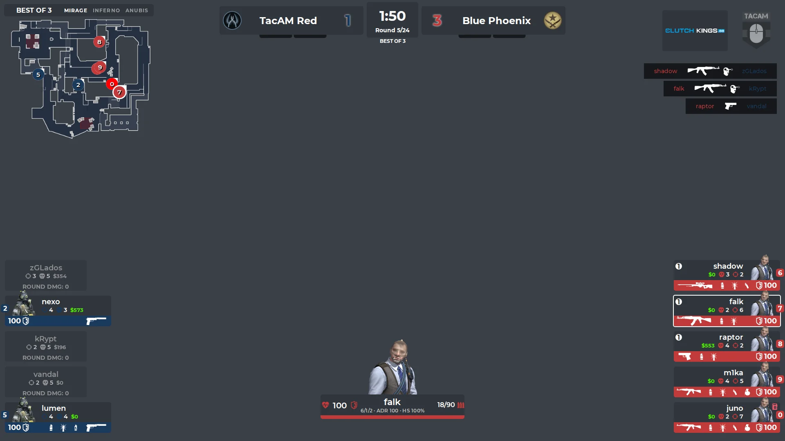
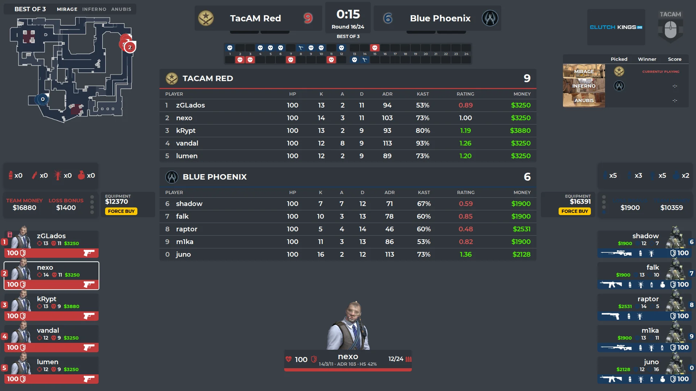
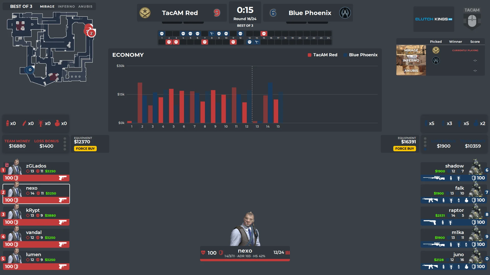
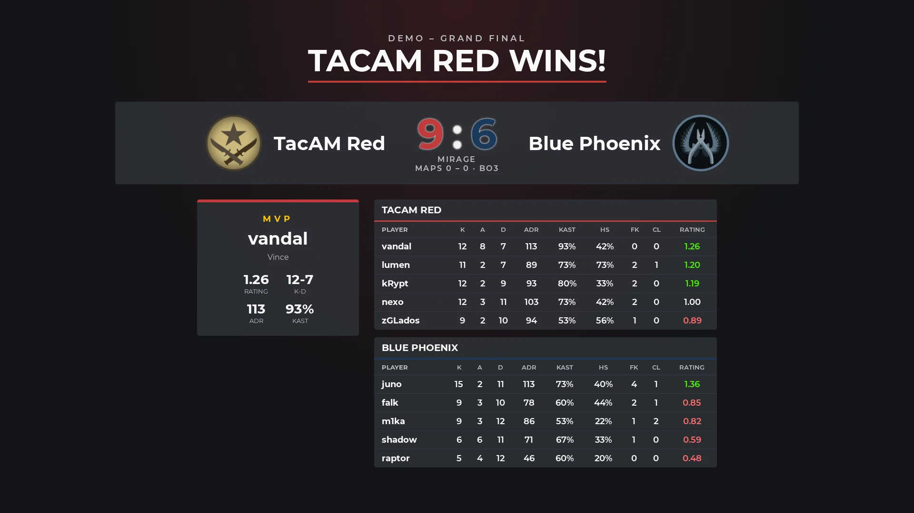
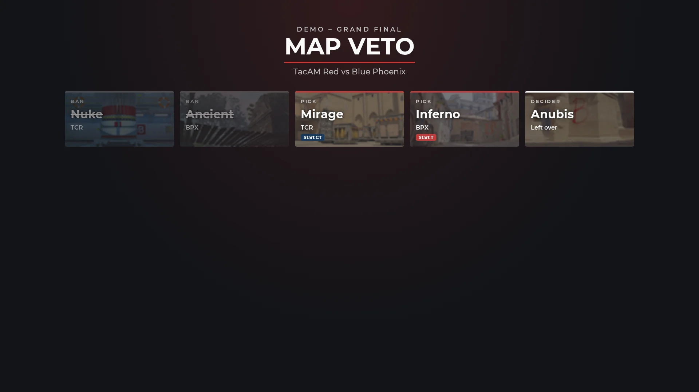
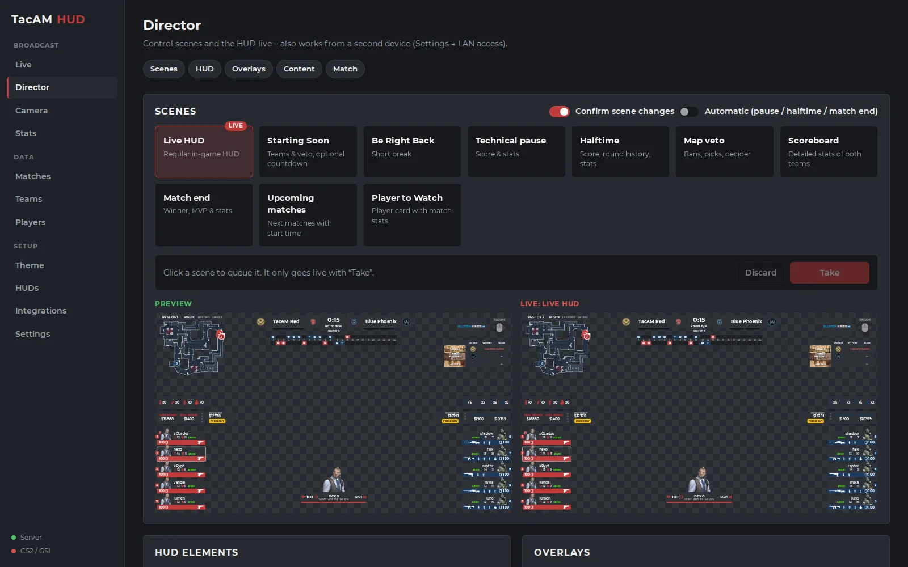
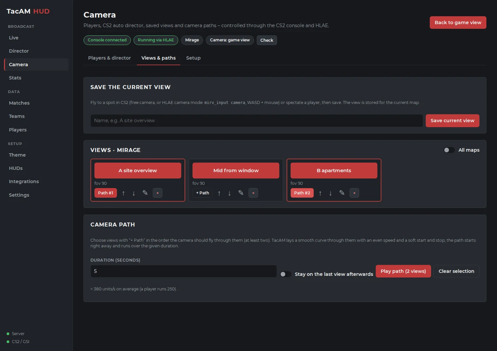
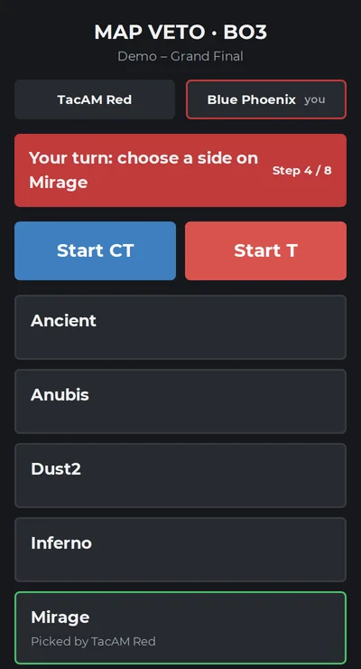

Broadcast HUD
Match bar, team panels, radar, utility and money, round history, map series, sponsors and a round win probability bar – as a transparent OBS source.
Free & open source · Counter-Strike 2
Live HUD for OBS, statistics, scenes, overlays, a director in the browser, HLAE camera paths and Stream Deck control – in one app. No account, no subscription, no watermark.
Windows installer with automatic updates · also runs as a Node.js server · GPL-3.0

Paid broadcast HUDs are great – and too expensive for community tournaments, LAN parties and smaller streams. TacAM HUD is the free alternative: everything a CS2 broadcast needs, running on your own PC, with the code open on GitHub.
Built by zGLados for the TacAM community, developed with the help of AI. Every feature is tested in CS2 and OBS, and every build comes from the public repository.
Match bar, team panels, radar, utility and money, round history, map series, sponsors and a round win probability bar – as a transparent OBS source.
ADR, KAST, HS %, opening kills, clutches, multi-kills, HLTV 1.0 rating and economy with buy types – straight from CS2's game state.
Starting soon, BRB, halftime, map veto, match end with MVP, player to watch; scoreboard, economy graph and player comparison over the live HUD.
Preview before going live, also on a tablet or a second PC in your network. Captains run the map veto on their phones.
Save camera spots per map, fly smooth camera paths, pick any player or let the CS2 auto director choose – through HLAE, started from the app.
Every action is a button with feedback. OBS follows the scenes, and game events trigger actions – e.g. the scoreboard after a round.
Players and teams with logos, CSV import and export, matches with veto, theme editor for colors, fonts, sponsors and logo.
Already use an LHM or JTs-Hud HUD? Import it and run it with TacAM's data and its own settings panel.







http://127.0.0.1:1349/hud/ at 1920 × 1080.
Detailed guides for camera control, Stream Deck and OBS are in the documentation.

Found a bug, missing something for your broadcast, or want to contribute? Everything happens on GitHub.